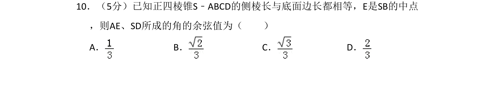
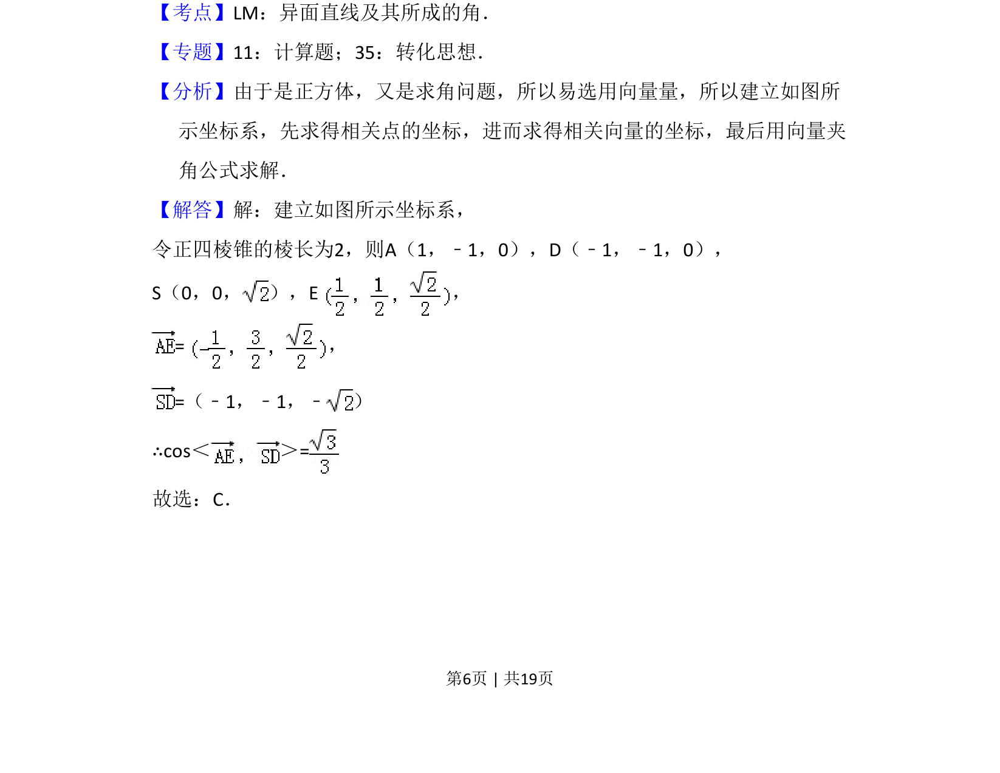
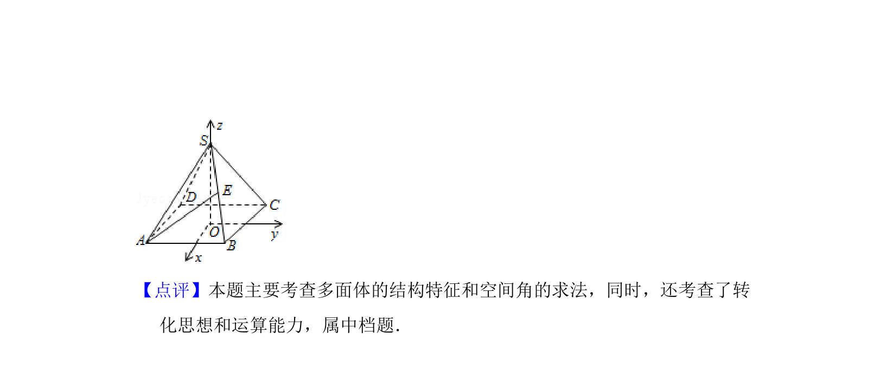

考点：异面直线所成角 空间向量运算 几何法向量坐标化

已知正四棱锥中侧棱长与底面边长相等，求异面直线所成角的余弦值。


📄 原 PDF 第 6 页：
素材/真题/吉林/2008-2024·（吉林）数学高考真题/2008年高考数学试卷（理）（全国卷Ⅱ）（解析卷）.pdf
10．（5分）已知正四棱锥S﹣ABCD的侧棱长与底面边长都相等，E是SB的中点 ，则AE、SD所成的角的余弦值为（ ） A．B．C．D．
【考点】LM：异面直线及其所成的角．菁优网版权所有 【专题】11：计算题；35：转化思想． 【分析】由于是正方体，又是求角问题，所以易选用向量量，所以建立如图所 示坐标系，先求得相关点的坐标，进而求得相关向量的坐标，最后用向量夹 角公式求解． 【解答】解：建立如图所示坐标系， 令正四棱锥的棱长为2，则A（1，﹣1，0），D（﹣1，﹣1，0）， S（0，0， ），E， =， =（﹣1，﹣1，﹣ ） ∴cos＜ ＞= 故选：C．